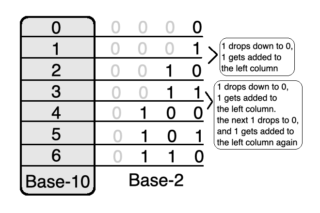
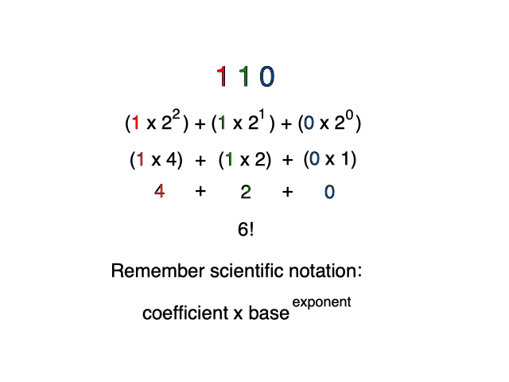
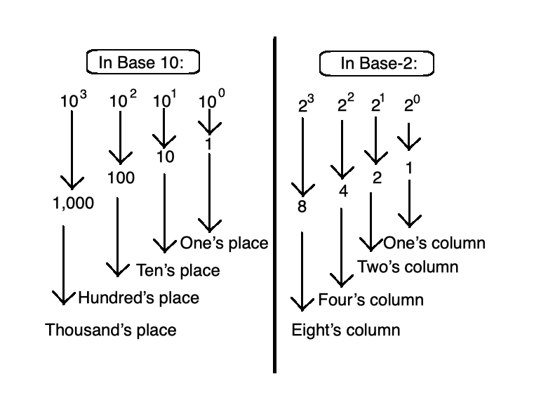
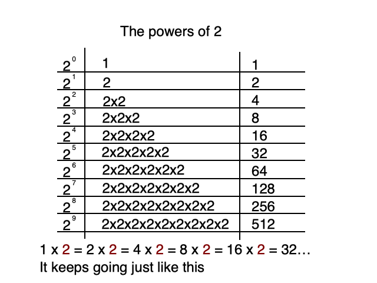
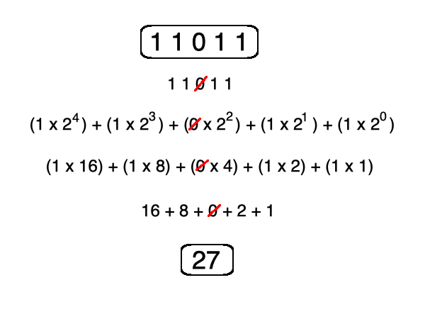
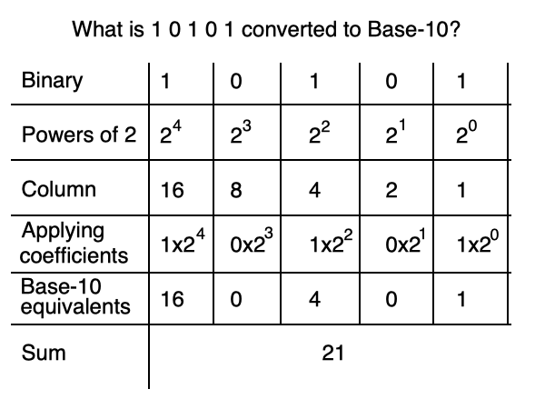

you smart good
Programming Concepts
Binary and Base-2
Now that we have a better understanding of how Base-10 works, we can use that knowledge to learn the basics of binary.
We learned in previous lessons that when you try to add 1 to the largest symbol (9 in Base-10), you drop the largest symbol to the smallest symbol (0 in Base-10), and then you add 1 to the digit to the immediate left.
We also learned that exponents and scientific notation play a major role in determining how numbers are strung together to create a sequence that we can fully understand.
In Base-2, zero is still 0 and one is still 1.
But when we try to add 1 to 1, we run into a problem. This is because we have run out of symbols that we can use in this column.
*Remember, Base-2 only has two symbols: 0 and 1.
So, to add 1 to 1, we must drop the largest symbol(1) to the smallest symbol(0) and add 1 to the column to the left.
This means that in Base-2, two is symbolized with 1 0!

Now how can we check this to make sure we're doing this right?
Above, we stated that 6 in Base-10 is 1 1 0 in Base-2.
Using this example, we can demonstrate how it works with our old friend, scientific notation!
*Remember that in Base-10, the base in scientific notation is always 10. In Base-2, the base in scientific notation is always 2.
The placement of the numbers, the coefficients and the exponents still work the exact same way as they did in Base-10.

Because the base is changed from ten to two, the names of the columns have changed.
The one's place in Base-10 is still the one's column.
The ten's place in Base-10 is now the two's column.
The hundred's place in Base-10 is now the four's column.
This will continue for every column, replacing the powers of 10 with the powers of 2. The columns and exponents work the exact same way though.

Now is a good time to review our powers of 2, to make sure we don't run into any exponent errors down the road.
When moving away from the decimal point, we simply multiply each column by two as we go.
For example, the first column on the right is 20 which is 1.
If we move to the next column, the power changes to 21, which is 2.
Each addition to the exponent is the equivalent to multiplying by 2. So the next column will be 4, then 8, then 16. It will continue like this indefinitely.

Now let's try another example. If we have 1 1 0 1 1 in Base-2, what is the Base-10 equivalent?
Well we have a 1 in the one's, two's, eight's, and sixteen's column.
In the four's column, 0 will be the coefficient resulting in a 0 for that scientific notation equation, so let's just ignore it.
If we add together 16 + 8 + 2 + 1, we get a result of 27.
This means that 1 1 0 1 1 in Base-2 is 27 in Base-10!

Understanding scientific notation is vital for understanding numbers in Base-2.
Remember to always start on the right most side and begin with an exponent of 0.
Because the symbols in Base-2 never become larger than 1, each column will work with powers of 2. Meaning, the two's column in Base-2 will always equal either 2 or 0. The four's column in Base-2 will always equal either 4 or 0. The eight's column in Base-2 will always equal either 8 or 0. This continues indefinitely. Then, simply add the columns that have a 1 in them, ignoring the columns with 0 in their place.
